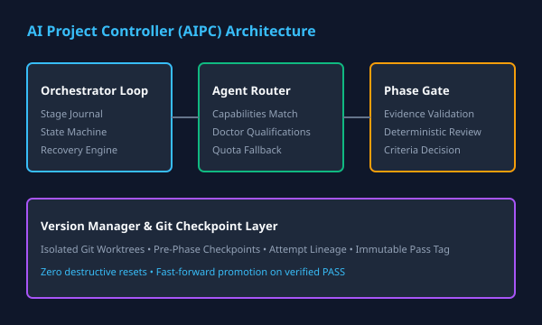

Software & AI
AI Project Controller (AIPC)
Provider-neutral multi-agent orchestration platform coordinating planners, coding workers, and independent reviewers with fail-closed phase gates, atomic git checkpoints, and deterministic crash recovery.
Python
Multi-Agent
Pydantic
Git Worktrees